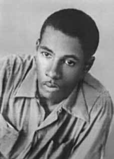

Hamilton
Fernando
Cunha
CIRCUNSTÂNCIAS DA MORTE
Hamilton Fernando Cunha morreu no dia 11 de fevereiro de 1969.
De acordo com a narrativa apresentada por José Ronaldo Tavares, conhecido como “Roberto Gordo”, Hamilton pediu que ele o acompanhasse até a Gráfica Urupês, onde trabalhava, no dia definido para acertar a sua demissão. Enquanto esperava, José Ronaldo ouviu gritos de Hamilton, e em seguida o viu sendo arrastado por policiais. José Ronaldo reagiu atirando, feriu um policial e em seguida fugiu do local.
De acordo com a narrativa apresentada pelas forças de segurança do Estado durante o regime militar, os investigadores Benedito Caetano e Teles, do Departamento de Ordem Política e Social de São Paulo (DOPS-SP), teriam ido à Gráfica Urupês com o objetivo de deter Hamilton Fernando, que ao ser abordado pelos agentes teria começado a se debater e a gritar por ajuda. Nesse instante, segundo o documento produzido pelo DOPS-SP, “um elemento desconhecido” (provavelmente, José Ronaldo), que havia acompanhado Hamilton até a empresa, teria entrado empunhando uma arma e, em seguida, teria atirado contra o investigador Benedito Caetano, que para se defender teria feito Hamilton de escudo.
Em depoimento a Nilmário Miranda, membro da CEMDP, José Ronaldo confirmou que esperou Hamilton na recepção da gráfica por algum tempo e estranhou a demora do companheiro em retornar, já que ele havia dito que os detalhes da demissão já estavam acertados e que seria rápido. Instantes depois, ouviu o companheiro gritando por ajuda e o viu sendo carregado por policiais. Tentou retirá-lo dos agentes e em seguida, segundo relatou, realizou um disparo, ressaltando ter desferido apenas um tiro que atingiu um dos policiais.
Pedro Lobo de Oliveira, sargento da Polícia Militar de São Paulo, foi expulso da instituição após o golpe militar de abril de 1964 e encontrava-se preso nas dependências do DOPS na ocasião dos fatos que culminaram com a morte de Hamilton Fernando. Em depoimento à CEMDP, afirmou que presenciou o momento em que o investigador Caetano retornou da operação cujo objetivo era prender Hamilton, apresentando um ferimento embaixo do braço. O policial militar afirma que ouviu o agente do DOPS confessar que foi ele quem matou Hamilton Fernando, e não José Ronaldo: “Foi o Roberto Gordo que me acertou, mas ainda bem que eu apaguei o Escoteiro”.
Outro indício de que a versão oficial dos fatos é falsa é um documento, produzido pelo Serviço Secreto do DOPS, informando que Hamilton foi morto durante uma diligência policial. De acordo com o laudo de necropsia, Hamilton Fernando teria morrido às 16h. Entretanto, seu corpo só deu entrada no Instituto Médico-Legal (IML) às 23h. O laudo necroscópico informa que Hamilton foi atingido por um único tiro, sem descrever os edemas na face e na fronte, as equimoses e ferimentos visíveis na foto do corpo de Hamilton.
No dia 18 de fevereiro de 1969, a irmã de Hamilton, Nilsa Cunha, foi intimada por dois investigadores do DOPS para ir ao IML reconhecer o corpo de Hamilton. Na ocasião, ela perguntou aos policiais como seu irmão havia morrido, ao que os agentes responderam dizendo que ela não deveria fazer perguntas e que apenas deveria acompanhá-los até o IML. Os agentes não permitiram que ela e seu outro irmão, que a acompanhava, organizassem o enterro de Hamilton.
No dia marcado pelo DOPS para a realização do sepultamento, os presentes foram escoltados por quatro policiais e os amigos tiveram que acompanhar o cortejo a distância. Os restos mortais de Hamilton Fernando Cunha foram enterrados no cemitério de Vila Formosa, em São Paulo.
Hamilton Fernando Cunha died on February 11, 1969.
According to the narrative presented by José Ronaldo Tavares, known as “Roberto Gordo”, Hamilton asked him to accompany him to Gráfica Urupês, where he worked, on the day set to arrange his dismissal. While waiting, José Ronaldo heard Hamilton scream, and then saw him being dragged by police officers. José Ronaldo reacted by shooting, injured a police officer and then fled the scene.
According to the narrative presented by the State security forces during the military regime, investigators Benedito Caetano and Teles, from the São Paulo Department of Political and Social Order (DOPS-SP), would have gone to Gráfica Urupês with the aim of detaining Hamilton Fernando, who, when approached by the agents, began to struggle and scream for help. At that moment, according to the document produced by DOPS-SP, “an unknown element” (probably José Ronaldo), who had accompanied Hamilton to the company, entered holding a gun and then shot the investigator Benedito Caetano, who, in order to defend himself, used Hamilton as a shield.
In a statement to Nilmário Miranda, a member of CEMDP, José Ronaldo confirmed that he waited for Hamilton at the printer's reception for some time and was surprised by his companion's delay in returning, as he had said that the details of the dismissal had already been agreed and that it would be quick. Moments later, he heard his companion shouting for help and saw him being carried by police officers. He tried to take him away from the agents and then, as he reported, he fired a shot, highlighting that he only fired one shot that hit one of the officers.
Pedro Lobo de Oliveira, a sergeant in the São Paulo Military Police, was expelled from the institution after the military coup in April 1964 and was imprisoned on DOPS premises at the time of the events that culminated in the death of Hamilton Fernando. In a statement to CEMDP, he stated that he witnessed the moment when investigator Caetano returned from the operation whose objective was to arrest Hamilton, presenting a wound under his arm. The military police officer states that he heard the DOPS agent confess that he was the one who killed Hamilton Fernando, and not José Ronaldo: “It was Roberto Gordo who hit me, but I'm glad I killed the Scout”.
Another indication that the official version of events is false is a document, produced by the DOPS Secret Service, stating that Hamilton was killed during a police investigation. According to the autopsy report, Hamilton Fernando died at 4pm. However, his body was only admitted to the Legal Medical Institute (IML) at 11pm. The autopsy report states that Hamilton was hit by a single shot, without describing the edema on his face and forehead, the bruises and injuries visible in the photo of Hamilton's body.
On February 18, 1969, Hamilton's sister, Nilsa Cunha, was summoned by two DOPS investigators to go to the IML to recognize Hamilton's body. At the time, she asked the police officers how her brother had died, to which the officers responded by saying that she should not ask questions and that she should just accompany them to the IML. The agents did not allow her and her other brother, who accompanied her, to organize Hamilton's funeral.
On the day set by the DOPS for the burial, those present were escorted by four police officers and friends had to follow the procession from a distance. The remains of Hamilton Fernando Cunha were buried in the Vila Formosa cemetery, in São Paulo.
Hamilton Fernando Cunha murió el 11 de febrero de 1969.
Según la narración presentada por José Ronaldo Tavares, conocido como “Roberto Gordo”, Hamilton le pidió que lo acompañara a la Gráfica Urupês, donde trabajaba, el día fijado para gestionar su despido. Mientras esperaba, José Ronaldo escuchó gritar a Hamilton y luego vio cómo lo arrastraban agentes de policía. José Ronaldo reaccionó disparando, hirió a un policía y luego huyó del lugar.
Según el relato presentado por las fuerzas de seguridad del Estado durante el régimen militar, los investigadores Benedito Caetano y Teles, del Departamento de Orden Político y Social de São Paulo (DOPS-SP), habrían acudido a la Gráfica Urupês con el objetivo de detener a Hamilton Fernando, quien, al ser abordado por los agentes, comenzó a forcejear y gritar pidiendo ayuda. En ese momento, según el documento elaborado por el DOPS-SP, “un elemento desconocido” (probablemente José Ronaldo), que había acompañado a Hamilton a la empresa, entró empuñando un arma y luego disparó al investigador Benedito Caetano, quien, para defenderse, utilizó a Hamilton como escudo.
En declaraciones a Nilmário Miranda, integrante del CEMDP, José Ronaldo confirmó que esperó a Hamilton en la imprenta durante algún tiempo y se sorprendió por la demora de su compañero en regresar, pues había dicho que los detalles del despido ya estaban acordados y que sería rápido. Momentos después escuchó a su compañero gritar pidiendo ayuda y vio cómo lo cargaban agentes policiales. Intentó alejarlo de los agentes y luego, según informó, le disparó, destacando que solo disparó un tiro que alcanzó a uno de los agentes.
Pedro Lobo de Oliveira, sargento de la Policía Militar de São Paulo, fue expulsado de la institución luego del golpe militar de abril de 1964 y se encontraba encarcelado en las instalaciones del DOPS en el momento de los hechos que culminaron con la muerte de Hamilton Fernando. En declaraciones al CEMDP, afirmó que presenció el momento en que el investigador Caetano regresaba del operativo cuyo objetivo era detener a Hamilton, presentando una herida debajo del brazo. El policía militar afirma que escuchó al agente del DOPS confesar que fue él quien mató a Hamilton Fernando, y no a José Ronaldo: “Fue Roberto Gordo quien me golpeó, pero me alegro de haber matado al Scout”.
Otro indicio de que la versión oficial de los hechos es falsa es un documento, elaborado por el Servicio Secreto DOPS, que afirma que Hamilton fue asesinado durante una investigación policial. Según el informe de la autopsia, Hamilton Fernando murió a las 4 de la tarde. Sin embargo, su cuerpo recién fue ingresado al Instituto Médico Legal (IML) a las 23 horas. El informe de la autopsia afirma que Hamilton fue alcanzado por un solo disparo, sin describir el edema en la cara y la frente, los hematomas y las heridas visibles en la foto del cuerpo de Hamilton.
El 18 de febrero de 1969, la hermana de Hamilton, Nilsa Cunha, fue citada por dos investigadores del DOPS para acudir al IML para reconocer el cuerpo de Hamilton. En ese momento, preguntó a los policías cómo había muerto su hermano, a lo que los agentes respondieron que no debía hacer preguntas y que simplemente debía acompañarlos al IML. Los agentes no permitieron que ella y su otro hermano, que la acompañaba, organizaran el funeral de Hamilton.
El día fijado por el DOPS para el entierro, los presentes fueron escoltados por cuatro agentes de policía y los amigos tuvieron que seguir la procesión a distancia. Los restos de Hamilton Fernando Cunha fueron enterrados en el cementerio de Vila Formosa, en São Paulo.